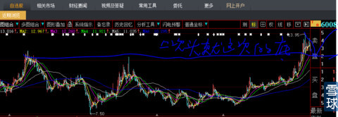
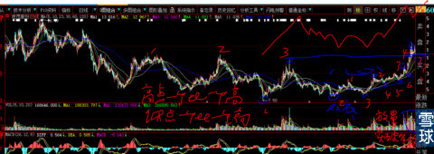
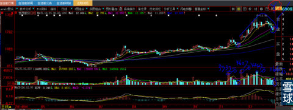
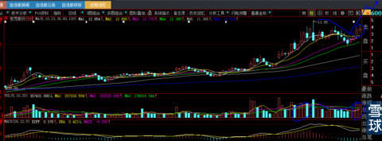
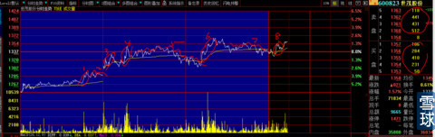
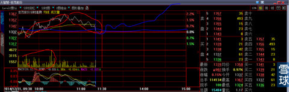
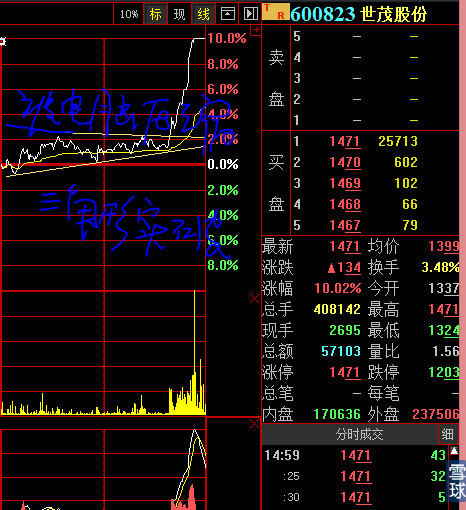
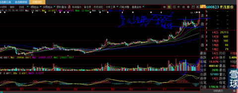

先简单描述一下我的性格：
1、不与人来往。历史的无数次经验告诉我，每与人深交往一次，就被深深的伤害一回。金钱都在其次，20多年来，虽然每次受伤害都以最少数万、基本数十万、也有过百万，使我的人生多次一贫如洗几起几落。但是我基本每次受伤后痛苦和沮丧心情从5天慢慢减少到1天甚至数小时就过去了。最大的伤害全部化成了我对人性全方位客观的观察与理解，窥测到财富获得的真谛：时间。没有恨没有怨。我想这是上天对我善良的心最大的奖赏。
2、上班是我的主业。业余时间（甚至很多工作时间）都是以阅读度过的，一旦股市行情到来，晚上健身房回来后，全部时间都花在阅读个股基本资料、财务报告和经典牛股战列的复盘上，数十年如一日，不打牌不赌博不逛街不与人结交。所有的假期基本献给了书籍与证券分析。
3、性格不是急躁，简直就是暴戾。知道什么叫暴戾吗？不仅不减，自己都能够感知到在不断的增强。大话一句：就是因为没有遇见过脑子转得快阅历积累丰富基础阅读面广，听对方一句话就知道后面需万言备注的真实意境。唯一变化的是：心越来越柔软、不可遏制的同情与些许感动经常使我热泪盈眶继而泪流满面。
上述的介绍多余吗？其实是为想说明3个问题做铺垫：
1、做好股票与性格有关也无关，我这么暴戾性格的人每当面对证券市场的潮起潮落，我的心就平静如水。我这样性格的人都做得到，还有谁不可以深悟此道呢？虽说这是需要多少血与泪的轮回才能练就的本领与信念！
2、初上牌桌就幻想做大牌赢大钱是人之常情无可厚非，是不是事与愿违只有你自己知道。看看我所耗费的时间，目前仍然停留在小学生的水平，你应不应该知难而退？
3、时间的长河会让你最终明白一个道理：挣钱的秘诀一是只能靠自己，靠山山会倒，靠水水会流。二是时间复利的威力。无论你从事何职何业慨莫能外。
2014年12月21日又是一个星期日，我写出了《如何狙击庄股》专贴，其中重点介绍了我对“丫”形十几年的重要心得与实战经验。
例如下图600823世茂股份2014年12月19日星期五收盘后日线图。我看见它的时候。它长得是这样的。我内心感知未来是那样？为什么会那样？

下图是我看见上图后的内心活动与思考。
1、大型态来看，股价在长达5年期的下跌过程中有3次宽幅反弹，基本上把市场低位与高位的筹码换了N遍，市场成本平均不低于10元。右边图中的“心形”高点一个比一个高，低点也是一个比一个高。2014年12月4—9日放量冲过长达3年的第4个高点大型“心形”连线的“颈线位”（也就是大圆弧底的颈线位）。
2、再看下图中底部标明的1、2、3处，多么明显的大型复合双底有力的支撑着图形，显得多么的对称与有力（股价连续两次上穿长期半年均线压制）？

3、心形标注的上1、2与下2、3局部图形，组合成多么标准的“头肩底”形态？标准的如同教科书一般。
4、心形右侧上标2、3、4与下标3、4、5、6、7形成的长、中、短均线的多头排列正在加大缝隙的发散开来。股价会如何走呢?
5、股价突破颈线位所连续放出来的量能（注意：是连续堆积放出，不是单日放出巨量，这是看盘分析重中之重）使我们对突破的有效性毫不怀疑，问题是突破后的回踩动作有多深呢？俗话说颈线位一旦突破，铁顶就会变成铁底，这就是我们预期的回踩目标位。最重要的就是回踩的量能是不是得到有效的萎缩控制，这是鉴别庄股的最核心指标与工具。
转眼4天后2014年12月25日（见下图），股价突破后回踩的价位果然到达“颈线位”并深入其中，只有长达6到10天的时间，才可以让5日均线下穿10日均线形成短线死叉效果，大资金庄家耐心做出这样的短期均线排列来就是让人看的，让谁看？当然是自视武功高强的技术派短线客高手看的呀！他们的信条就是5日线下穿10日线止损或者止盈走人。对于我这样的人来说，哪么挺拔与缝隙开阔的4条长期均线呈多头排列，股价怎么可能被萎缩到1166万股/最高单日放量4607万股=萎缩到25%的成交量打下深涧？
看图型的基本功是：

1、股价处于大图型的何种位置：底部？中部？高部？
2、涨幅与长期爬坡、横盘时间对比，是不是构成”美“的对称关系？你们看看上图的头部与整个图形的爬坡关系对称吗？
3、当晚我就发出要写600823世茂股份专题逻辑的预告；其实用心与暗示即使傻子也明白啦！
虽然一再申明：在我的地盘分析我自己的股票是我学习、总结、思考与心路过程记录，绝对不构成对任何投资人的建议。股市有风险，入市须谨慎！
你赚了钱我恭喜你，亏了钱我也没有办法负责，就如同那位粉丝2014年10月30日看到我在600694大商股份自选股理由“这种走势华山只有一条路那就是：上”之后好心推荐他朋友10月31日33.4元附近买入，11月4日来我这里开始还很痛苦的倾诉朋友亏了4万元（那么小的跌幅就亏4万元，可想而知他朋友至少买入130万元）。我回复他说：“走势已经说明了一切，震荡回调很正常”。这时候他开始的质问就实在让人接受不了：“哪你就不能说的那么肯定呀：只有向上一条路”！我立刻无语。11月11日股价冲到34.7元，我赶紧找到他的名字@他：告诉你朋友卖出，现在不亏了有点赚。时隔自然日才1个半月后的12月29日600694大商股份走到49.48元涨幅48%，他朋友命中富贵的话应该账面盈利62万，也许他朋友早就亏损一点卖出后再买到一个月翻倍股赚到130万。命中富贵谁也拦不住。
这次的遭遇导致我把写了很多的帖子再狂删一遍。后来看到很多粉丝指责那位小伙伴的时候心情才慢慢恢复：还是有明白人啊！这才有了后来的新帖子。
在我发出要写世茂股份逻辑专贴后两天里，烦扰我的噩梦就开始了。在上图这两天，很多原来持有人看到后的新粉、这两天买入的老粉每天@我、聊天对话框里留言都堆积如山，还好我都能耐心回复。暗暗告诫自己不要烦，有始有终的打好这一仗。
2014年12月30日晚上，我看着下图最后两天小幅波动K线所对应的连续两天3081万、3074万股等额成交量（下图成交量所圈之处），默默看着“丫”左肩套牢筹码在临门一脚一刹那黯然离去，财富就这样与之擦肩而过。感慨万千，长叹人生的造化。
只有我的粉丝，白天看到我一再强调的要写“世茂股份”逻辑专贴，晚上再看我给他们的回复：“只有这样的成交量才能够有力的消化、赶走左侧跟庄吸血蚂蝗资金。庄家可以通过参与交易来扩大成交量，唯一做不到的是缩小成交量。这两天成交放大股价却不涨，不就是大资金在关键价位埋伏层层卖单，并且在下面埋伏层层买单，一面遏制买盘的冲动，一面用大单砸向自己的买单，一层一层的股价下跌，一面用自己的预设买单承接自己的卖单+混杂其中最后的散户、大户恐慌+没有耐心浮筹卖单”。
对于我这样的人来说，此时的下图简直就是家门口的提款机。还记得我对那只股票说过：低吸总是愉快的吗？
我这个时候感受就是：拔剑四顾心茫然（量你一辈子也体察不到这种看透后的自信、傲慢、孤寂与苍凉）。

以下是我盘中回复他们的即时分析的主要部分：
下图是2014年12月31日上午10:30时的盘中截图，我知道会有这一刻，就提前开始准备资料，做了一回有心人，兑现要写它专贴的承诺。
1、下图是连续4天的分时图，你们会发现1、2、3、4位置股价拉升连续3波，上涨放量下跌缩量，最关键的看点在于5开始的缩量下跌空方只能打到上次的低点就开始6的有力放量上涨，正所谓进三退一。6流利的上涨与7、8之间的下跌遭到多方层层抵抗，显得空方多么艰难？打压的好累好累。还没下跌多少就遭多方层层承接狙击，直到31日早盘8位置的流畅拉升与回落时刻。下图买卖单处所圈位置的数量都在3位数，这可是大盘股啊！我知道最后的时刻来了，虽然还是在上班，也还是顺手截下那一刻画面，让大家感受我此时内心真实活动。

中午回家吃饭，看到的是以下分时成交图，看到很多粉丝询问留言，就把上述分时解盘描述给他们看。大家看看下图，最高2.2%的涨幅就把电脑画框全部顶满，你看的时候是不是有股价太高的感觉？对，这就是我说的：电脑画面只有那么大，股价的上涨与下跌后，你的眼感完全是两种状况（见之前我的技术贴里有描述）

下午收盘后，电脑画面就变这样的了。上图那些高点是不是感觉在山脚下？这就是视觉的错误，也是庄家做盘的方法之一。例如要出货时，就早盘在卖单稀疏的情况下先把股价打高，把电脑视觉画面放大，等股价下跌时，你的眼感就没有那么可怕，庄家就可以很舒服的卖。庄家吸筹的时候，股价上下就是各1%以内就把电脑画面顶满，所以你看到每一个单笔成交上涨与下跌显得都很可怕。我就是这样在9月19日发现000415渤海租赁庄家强悍的，把那么大的盘子股票可以控制在那么狭窄的范围成交，庄家太强悍了，可见他手握筹码之重。

再对照下图，看看”丫“形是多么完美？小箱体震荡与我的《图形的基础知识之8》对照是多么经典？2014年12月31日涨停后全天成交量4081万股，比前两天30081万股的成交量仅仅只增加了1000万股，股价的差异却是10%，你不觉得对成交量的感悟突然开窍啦？
现在知道我为何那么痛恨只在事后解盘式的专家与牛人了吧？任何对股价走势没有提前预知的事后解盘都是耍流氓，因为与我们账户的增长没有一毛钱的关系。
下图是总览全局的画面，是不是特别赏心悦目而经典？问题是如果不能提前预知未来，有什么用呢？

 |
600823世茂股份：多空争斗分时图分析炒的是心 2015-01-02 14:02:29 |
Copyright © 1996-2014 SINA Corporation All Rights Reserved.